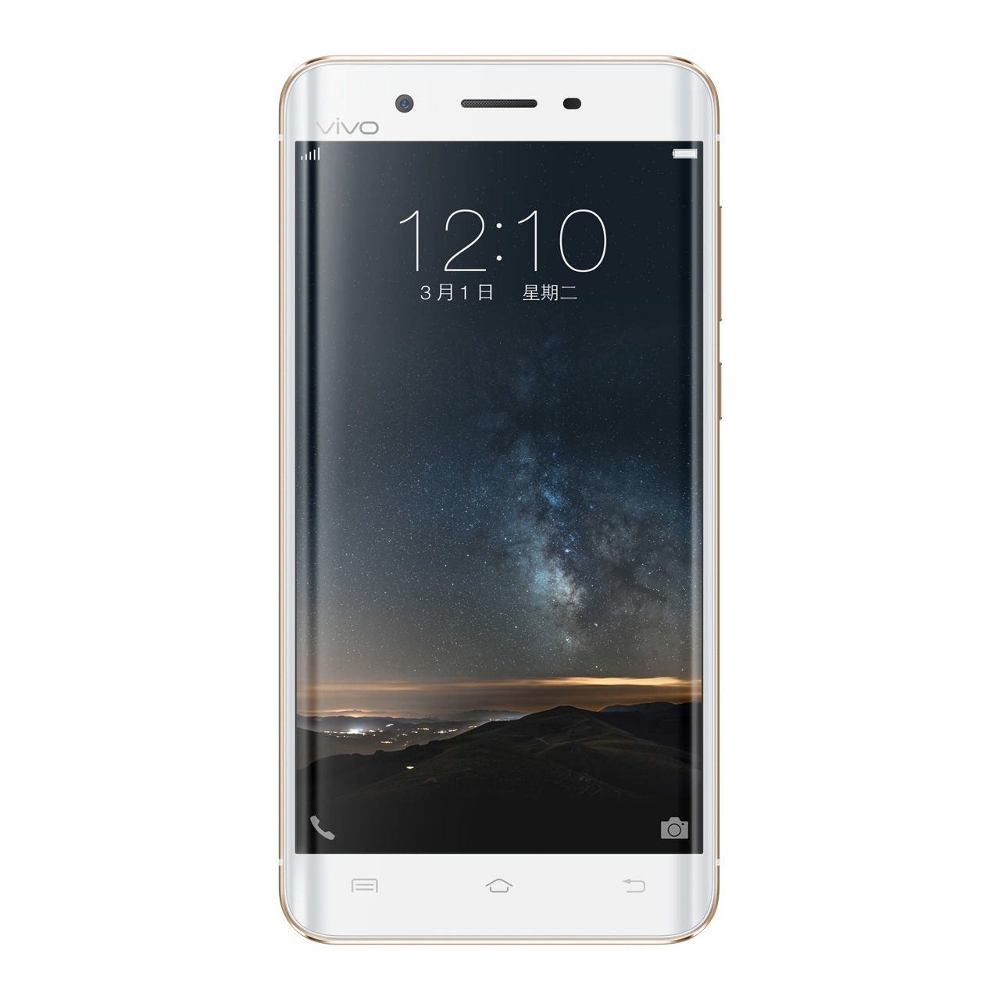
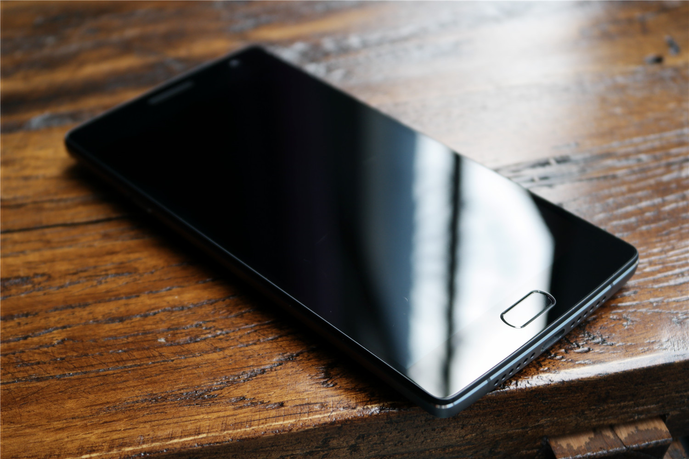
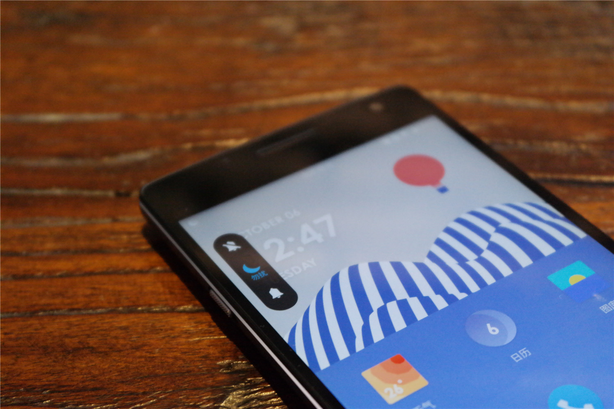
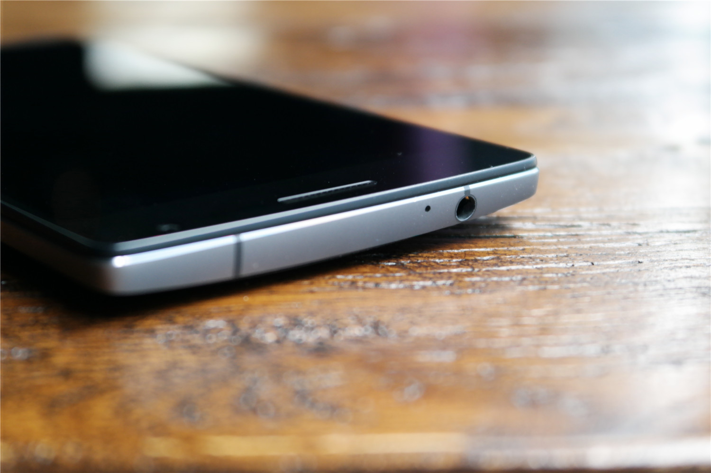
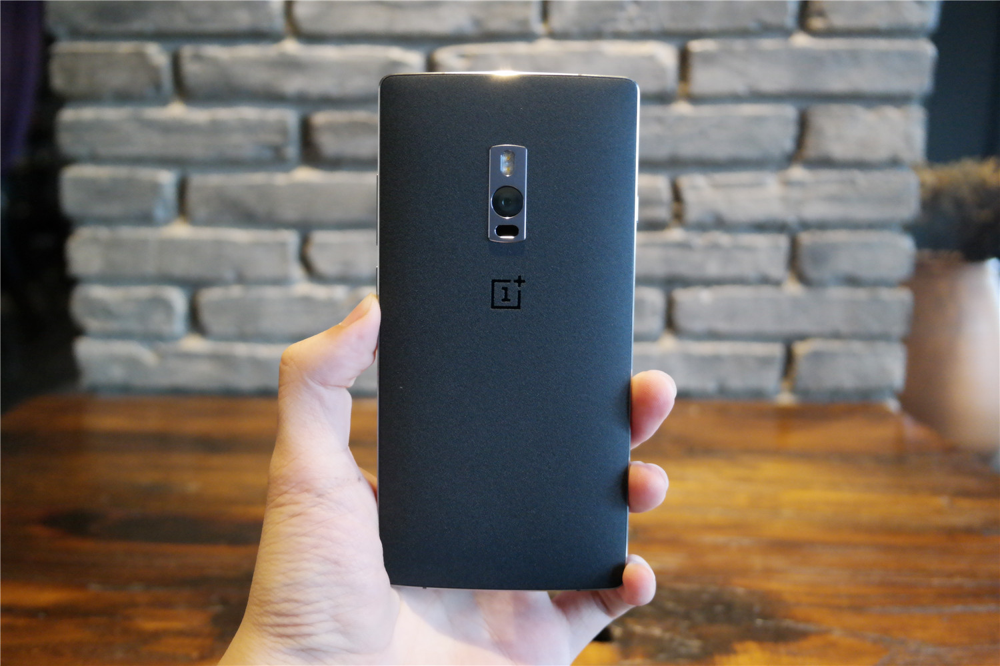
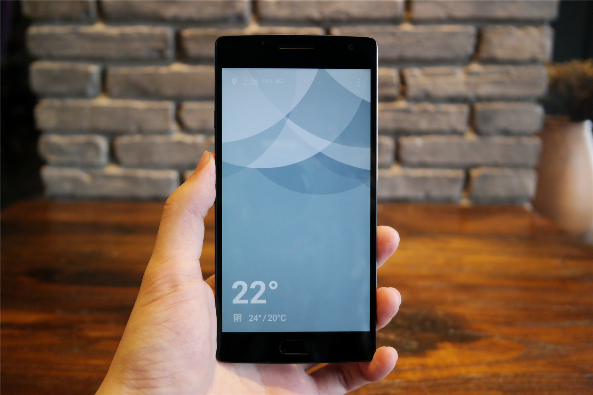
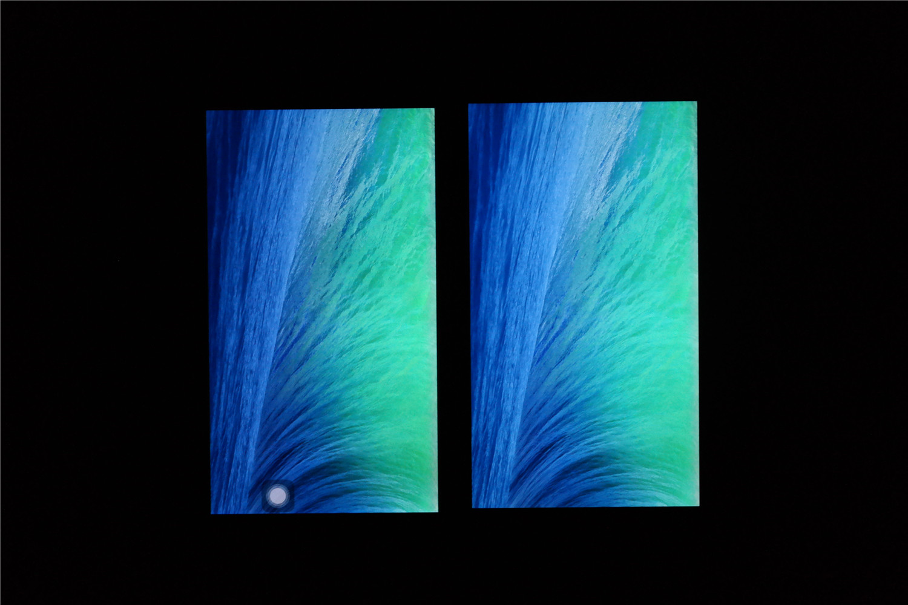
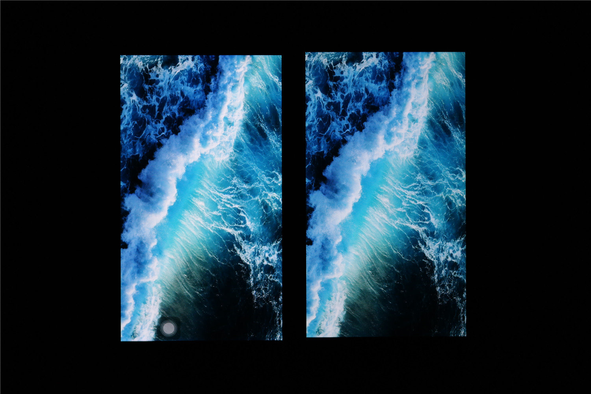
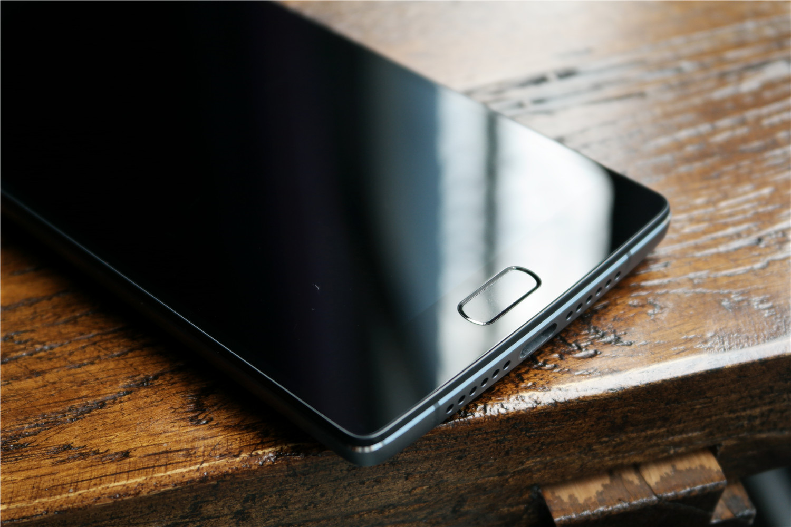
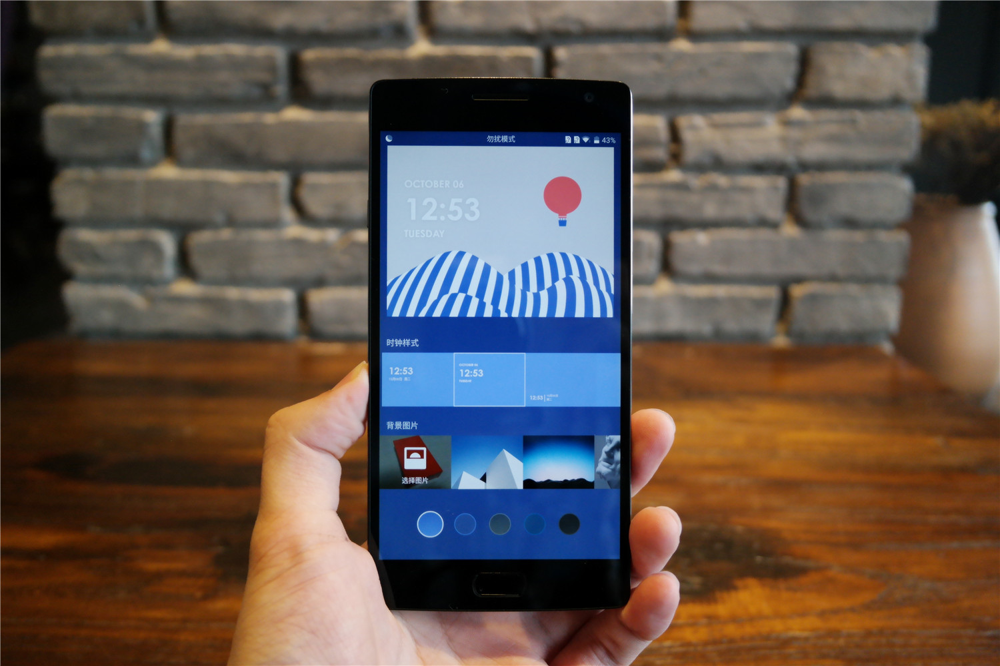

Oneplus2 Review
22/10/2016

Oneplus2 Review

- Size: 151.8X74.3X6.6mm
- Weight: 145g
- Battery: 2850mAh
- Screen size: 5.5 inch
- SOC: MT6755
- Camera: 1300w/1600w
- Resolution:1920*1080
- Price:$360
I personally have been very appreciate a plus the brand, not only because of a plus a generation of mobile phones in all aspects of the outstanding performance, but also because its "not to" brand concept coincides with my personal creed coincide. In this year, I have been looking forward to one plus two, looking forward to it can bring me more surprises. After more than 400 days, a mobile phone 2 generation has finally arrived, "2016 annual flagship" slogan demonstrates a plus for this product confidence. As a consumer, I can not wait to wonder whether a plus two of mobile phone strength to write a generation of brilliant, and whether worthy of the "2016 annual flagship" of the title.

A cell phone 2 generation of the overall design style and 1 generation is similar, but 2 generation appears to be more tough. Such as the metal box to join, to enhance the grade and texture of the machine at the same time, also added some business atmosphere.

Positive proportion of the screen is not too high, wide forehead wide chin design more in line with the aesthetic of men. Below is a non-compressible fingerprint sensor, the left and right of the return key and multi-task keys can be replaced in the system position. In fact, at first I can not be pressed for fingerprint recognition is skeptical, because it is not consistent with the habits of ordinary users. But after two or three days of use, I found it is not difficult to adapt, and more convenient than the mechanical press, more effort. (Specific use of feelings later elaborate)

The left side of the fuselage is a newly added three-segment switch, you can "mute", "do not disturb mode" and "ring" between the fast switch. Some are similar to the mute button on the iPhone, but one adds to the more comprehensive. This feature on me need to frequently switch mode of the people, it can be said to be very practical, once used to no longer go back. It is worth mentioning that this three-stage switch feedback powerful, feel very good, and the surface has a unique texture, convenient for blind operation in the dark.

1 generation of the floating screen is a shiny design, this design can effectively reduce the broken screen when falling chance, silver lap also make the whole machine is more flexible, but it always has a problem - fouling . In order to solve the problem of fouling, the second generation will be suspended screen U-groove to V-groove, narrowed the width of the silver side of the package will naturally disappear. Although the perfect solution to the problem of fouling, but lost the kind of light Smart feeling, which makes the machine becomes more stable low-key. The bottom of the fuselage is a classic symmetrical layout, the middle is USB TYPE-C interface, the right side of the speaker, the left side of the microphone. Although a single speaker, but the putting effect is also very good, in the bass when there is good expression.

Unfortunately, a plus 1 generation babyskin back cover has not been retained on the 2nd generation. 2 generation of standard back cover into a black sandstone, feel very good. In addition to sandstone black, there are black apricot, bamboo, Kevlar, acid four kinds of back cover optional, but because I do not have other material in the back cover, so do not do too much for the other back cover comments .

One plus two of the camera using the OV of the 13 million pixel sensor, almost all manufacturers are using Sony IMX series as the main camera case, a plus can make this decision can be said to be very bold. The top of the camera is a dual LED flash, the bottom is the infrared focus sensor. In the case of using a sandstone black back cover, the camera is slightly higher than the back cover. But the reference to other evaluation, the use of other materials cover the case, the camera can be flat with the back cover.

In general, despite the compromise in the weight of the whole, a mobile phone 2 generations of industrial design compared to the previous generation is significantly improved, the metal frame to join, more mature replacement mechanism back cover, The price of 2,000 yuan more competitive. Calm in no lack of bright spots, this is my second generation of industrial design of a mobile phone evaluation.


Last year, one plus one generation of the bottom of the phenomenon of yellowing, although the basic does not affect the daily use, but inevitably gives the impression of a mobile phone on behalf of the screen in general. In this one plus two of the conference, Liu Zuohu repeatedly referred to the "transparent" the word. However, that light useless, direct look at the actual performance. In contrast with the iPhone6 Plus (left), you can find a plus two of the screen perception is indeed very close to the iPhone, it can be said to reach the mouth of Liu Zuohu "transparent."
Since the so-called "2016 annual flagship", a mobile phone 2 generation of SOC is naturally no doubt choose the current high-pass processor Xiao Long 810, 4GB of ram is currently the highest configuration. Geekbench running sub-test, a cell phone to obtain a single-core 1041/3820 multi-core results in line with the overall level of Snapdragon 810. 4GB of ram also allows a mobile phone 2 generations in the daily use of very smooth, even if the background open more than 10 programs, switching applications will not reload the situation.

Fingerprint recognition can be said that one plus two of the controversial focus of the. One plus two of the front can not be pressed using a fingerprint identification method, before using a similar program seems to only htc. Because it is not pressing the fingerprint identification, in the black screen state can skip the lock screen interface to unlock, once the fingerprint unlock fails 3 times the screen will automatically light up, prompt you to enter the password (this time can not use the fingerprint to unlock)
In the previous part of the box I said. Initially, I was skeptical about unenforceable fingerprint recognition because it did not fit the average user's habits. But after two or three days of use, I found that although slightly violated sense of vision, but it is not difficult to adapt, and the touch is more convenient than the mechanical press, more effort, do not need to deliberately adjust the hand position to press the home button.
In addition to ease of operation, the accuracy and speed of identification is also considered a very important factor in fingerprint recognition. A second generation of mobile phone fingerprint recognition speed can be said to be crushed iPhone6Plus (because there is no 6s series at hand, so can not be compared). Comparison of recognized fingerprint recognition faster mobile phone - Meizu MX5, one plus two are also slightly faster. In general, one plus two of fingerprint recognition is still quite satisfactory. I believe in the future system updates, fingerprint recognition will play a greater role.

In general, a plus phone 2 is still the continuation of the performance of the previous generation of equilibrium, and enhance the level of imaging is particularly prominent. At the same time, the newly added fingerprint recognition, metal box, independent research and development of hydrogen OS also let it full of bright spots. But the lower the system to complete degrees, the weight of compromise people can not help but regret some. However, these small regret will not prevent it among the 2,000 yuan file the most competitive mobile phone list. If someone wants me to recommend 2,000 yuan worth of files to buy the phone, like last year, I still recommend a plus. Finally back to a plus the brand itself, I mentioned at the beginning, I personally appreciate the spirit of a plus not to, and hope that it has been the spirit of the continuation of deep-rooted to each generation of DNA products.